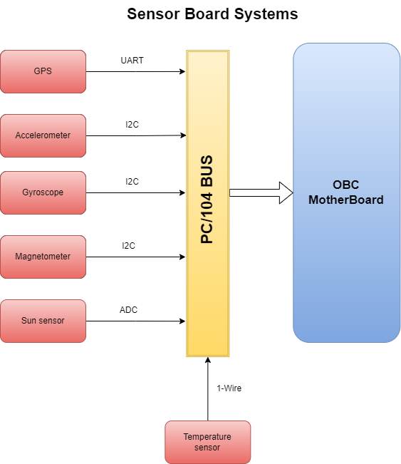

🚧 In Development: This CubeSat project and its documentation are actively being developed. Expect frequent updates and changes.
Project-Shadow-Flight
"Oh yee space fairer!
I will write your name on the moon with my fingertips" ~ ESA, EIRSAT-mission
Project Creator: Edwin Mwiti
Contact: emwit.nosp@m.i658.nosp@m.@gmai.nosp@m.l.co.nosp@m.m
Github: bytecod3


Introduction
Project-Shadow Flight is a homemade 1U cubesat designed and built using FreeRTOS on STM32 framework and COTS components. None of these components are radiation hardened.
Web documentation
You can find a web friendly documentation format here: https://bytecod3.github.io/Project-Shadow-Flight/
Design Videos for visual consumers
If you are more of a visual consumer, I have documented the whole design process in my Youtube channel playlist here: Comprehensive Design videos
Motivation
This project was motivated by the curiosity to learn about space systems, especially cubesats, mission softwares and space electronic hardware in general, and try to replicate, within a defined time-frame, a simple yet fully functional cubesat that can be used for demo purposes or even better, through the available channels, be improved for launch!
Mission statement
The primary mission for this cubesat is Earth Observation (EO). It is designed to operate in the Low Earth Orbit(LEO). It will capture images over a given area, on a sun-synchronous subrecurrent orbit, depending on the received command from ground station. These images are then compressed, stored and transmitted back to ground when a pass over a base station is reached. No image processing is done on board the Cubesate so as to save battery power and processing power for other critical tasks.
The cubesat is designed to have two major operation modes:
- Normal operation mode
- Mission operation mode
These two states can be configured and changed accordingly from the ground station.
System components
A cubesat in general is made up of the following subsystems:
- Onboard Computer system (OBC)
- Communication and Data Handling system (CD & H)
- Electrical Power Supply system (EPS)
- Attitude Determination and Control system (ADCS)
- Sensor and Payload System
- Structural and Thermal system
1. Onboard Computer
Introduction
The onboard computer performs the housekeeping tasks needed by the cubesat. It is the main link between all the other subsystems used in the cubesat.
Functional requirements
The following is a list of the functional requirements of the OBC:
- The CubeSat shall perform reliable data processing and control operations using an STM32F401CCU6 microcontroller.
This includes handling telemetry, command execution, subsystem coordination, and real-time control tasks.
- The CubeSat shall store mission-critical data and logs in non-volatile memory to prevent data loss during power cycles.
Memory must support both temporary (RAM) and permanent (Flash or EEPROM) storage for payload data, telemetry, and system logs.
- The CubeSat shall support inter-board wired communication between the OBC, payload, and EPS using standard digital protocols (e.g., UART, I2C, SPI).
The interfaces must support command, telemetry, and sensor data exchange.
- The CubeSat shall indicate system and subsystem statuses using onboard status LEDs.
LED indicators shall reflect boot status, error conditions, power state, and communication activity for debugging and development.
- The CubeSat shall be programmable via an external programming/debugging header accessible during integration and testing.
This header must support SWD or UART-based flashing and debugging.
- The CubeSat shall utilize deployment and "Remove Before Flight" (RBF) switches to ensure safe handling and automatic activation post-deployment.
RBF switch shall disconnect power from the CubeSat until it is removed prior to launch. Deployment switches must detect separation from the deployer and initiate startup sequences.
- The CubeSat shall interface with the payload board via a standardized electrical connector to exchange power, control, and data signals.
This interface must be robust to launch vibrations and support defined command/data protocols.
- The CubeSat shall monitor voltage and current levels of its power system using telemetry from the EPS.
Power monitoring shall allow detection of over/under-voltage and overcurrent events to protect hardware.
- The CubeSat shall implement a brown-out detection mechanism to safely handle unexpected power drops.
Upon voltage drop below a threshold, the MCU must reset safely or enter a low-power state to preserve system integrity.
- The CubeSat shall include a hardware watchdog timer to recover from software faults or unresponsive states.
The watchdog must be periodically refreshed by software; failure to do so shall cause a system reset.
- The CubeSat shall include up to 3 inhibit switches in accordance with CubeSat deployment standards to prevent premature activation of systems.
Inhibits must disable power or specific subsystems until conditions for deployment are met (e.g., separation from deployer).
Components of the OBC
The OBC is made up of the following sub-systems:
- STM32F401CCU6
- MEMORY AND Data storage
- Interboard Wired communication
- Status LEDs
- Programming header
- Deployment switches
- Remove before flight switch
- Interfaces to Payload board
- Power monitoring system from EPS
- Brown-out detection circuit
- Hardware watchdog timer
- Inhibit switches
The image below shows the memory and debug block diagram used on this cubesat's OBC:

To note, all the PCBs are equipped with ISA PC/104 connectors to make stacking possible
2. Sensor Board
Introduction
The sensor board is responsible for housing the sensors used for environmental monitoring around the cubesat in space. The list of components used in this project's sensor board is as below:
- VGA Monochrome Camera
- Temperature sensor
- Humidity sensor
- Pressure sensor
- Sun sensors
- Dedicated MCU
- Flash memory
- Dedicated Voltage regulator
- Debug LEDs
- ISA connector
- Watchdog Timer
- Inhibit switches
- Remove before flight switch
- GPS module
Functional requirements
- The sensor board shall capture monochrome VGA images using an onboard camera module.
The camera shall output image data in a format compatible with the main OBC or a local MCU for processing or storage.
- The sensor board shall measure ambient temperature using a digital temperature sensor.
Temperature readings shall be provided periodically to the OBC via a digital interface (e.g., I²C or SPI).
- The sensor board shall measure relative humidity using a digital humidity sensor.
Data shall be sampled at a configurable rate and stored or transmitted as telemetry.
- The sensor board shall measure ambient atmospheric pressure using a barometric pressure sensor.
Pressure data shall support environmental diagnostics or payload experimentation.
- The sensor board shall include sun sensors to determine the direction and intensity of incident sunlight.
Sensor data may be used to correlate with camera imagery or power system behavior.
- The sensor board shall operate using a dedicated low-power microcontroller (MCU) to manage data acquisition and communication.
The MCU shall handle sensor polling, data formatting, and camera interfacing independently of the OBC.
- The sensor board shall store acquired data in non-volatile Flash memory for later retrieval.
Stored data shall persist through power cycles and include image frames and sensor telemetry.
- The sensor board shall regulate its internal power using a dedicated voltage regulator.
The regulator shall provide stable 3.3V and/or 1.8V rails from the main CubeSat power bus.
- The sensor board shall interface with the CubeSat On-Board Computer (OBC) through an ISA connector.
The interface shall support communication (e.g., I²C/SPI/UART), power, and synchronization signals.
- The sensor board shall include a hardware watchdog timer to reset the MCU in case of software lockup or failure.
The watchdog shall require regular refresh signals; failure to refresh shall initiate an automatic system reset.
- The sensor board shall respond to Inhibit switches to disable or enable functionality based on the satellite’s deployment state.
All active electronics must remain off until inhibit conditions are cleared.
- The sensor board shall remain unpowered until the Remove-Before-Flight (RBF) switch is removed.
The board must detect the RBF switch state and delay power-up until it is safe to operate.
- The CubeSat shall include a GPS module to provide real-time position, velocity, and timing data.
The GPS module shall interface with the OBC via UART or another compatible digital protocol and provide NMEA or binary-format data for onboard logging, orbital tracking, and synchronization.
The block diagram is shown below:

Communication protocol for sensors
| Sensor | Protocol |
| 1 | Temperature Sensor | 1-wire |
| 2 | Accelerometer | I2C |
| 3 | Gyroscope | I2C |
| 4 | GPS | UART |
| 5 | Magnetometer | I2C |
| 6 | Sun sensor | ADC |
The PC/104 ISA Bus
This project used the PC/104 standard for communication bus implementation.
Bigest advantages of this standard:
- Stackable
- Interoperable- you can remove boards and use in another design
- Functionality extension - easy to add functionality
- Compact
- Rugged - can handle shock and vibration
An ISA connector looks like below:

The images below explain the stacking of the PCB boards (credit: Diamond Systems):


Further reference: PC-104 standard reference
My Pin definition
In order to customize the ISA connector to fit what this project uses, I have defined the pins as shown in this pin definition document. Since the project is in progress, these pin assignments are bound to change often:
Shadow-Flight-PC/104 BUS
3. Attitude Determination and Control
🚧 In Development
This system is responsible for receiving attitude data from sensors and acting on it in realtime to control the attitude(orientation ) of the satellite. This is mainly implemented in software as the diagram below depicts.
The signals produced are fed into ana actuator or tticde coontrol,
Data from the sensors is read, then passed to the ADCS algorithm.
4. Electrical Power System (EPS)
🚧 In Development
Introduction
The EPS is responsible for the following functions:
- Energy generation
- Energy conversion
- Power regulation
- Power storage
- Power distribution to loads
There are several methods to do power generation and other fucntions listed above. However, the recommended approach among most cubesat design teams, and the one I choose to follow for this project, is the procedure below:
1. Define the power consumption and electrical characteristics of the spacecraft bus components
2. Define the necessary power generation and energy storage required
3. Select the power generation and energy storage methods
4. Analyse the system's power budget and profile based on the start to end of mission
5. Design power conversion, management and distribution subsystem to interface the power sources
6. Procure and fabricate components
7. Conduct tests on isolated components
8. Conduct tests on integrated components
There is a lot that can be discussed in respect to EPS but I have tried to be consise and to the point in the summaries below:
a) Power consumption of different bus components
b) Power generation
c) Energy storage
d) Mission analysis in regards to power
e) EPS Schematics summary
Conversion
Power Distribution Schemes
Power supply control
f) Isolated tests
g) EPS integration and Testing
Related documents
A list of related documents related to this project are provided below. They include diagrams, schematics, design source files, datasheets, 2D diagrams, 3D assembly diagrams, test information and logs etc.
Relevent videos and resource materials
- https://youtu.be/5voQfQOTem8 (Build your own satelite)
- https://pressbooks-dev.oer.hawaii.edu/epet302/chapter/5-4-design-process-and-drivers/
- https://resources.altium.com/p/prototyping-solar-solution-your-outdoor-embedded-device
- https://pycubed.org/What%20is%20PyCubed%20f257a98ec60044538d8fbdc20fec987f.html
- https://github.com/hsfl/artemis-hardware
- https://sites.google.com/hawaii.edu/artemiscubesatkit
Contribution and support
This project is not funded by any organization or entity and is solely reliant on out-of-pocket funding. We therefore heed to anyone desiring to contribute, in monetary form, technical advise, links and connections, electronic components, code and schematic design contribution, etc., or even if you are interested in knowing more about the project details, you can reach out to me via this email (emwit.nosp@m.i658.nosp@m.@gmai.nosp@m.l.co.nosp@m.m) and I will get back to you soonest.
Thank you again for your consideration! Ad Astra!
Contributors
- Edwin Mwiti